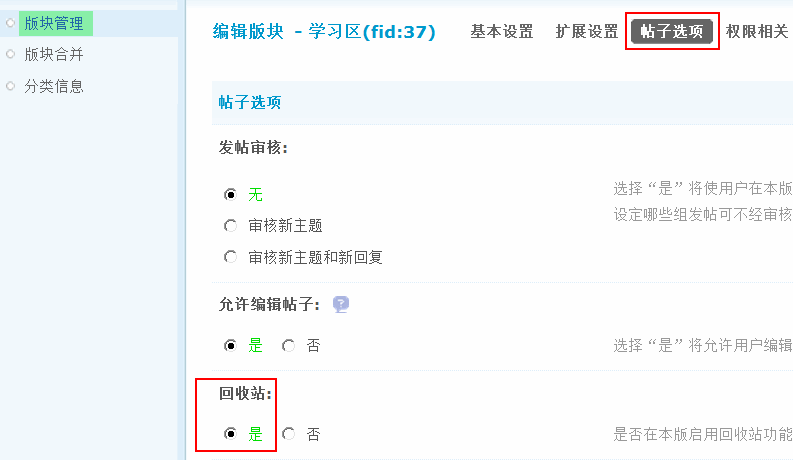
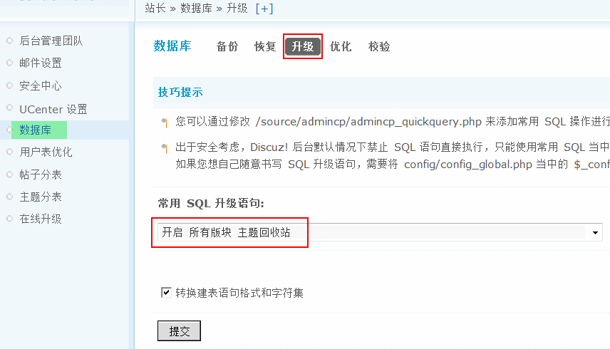
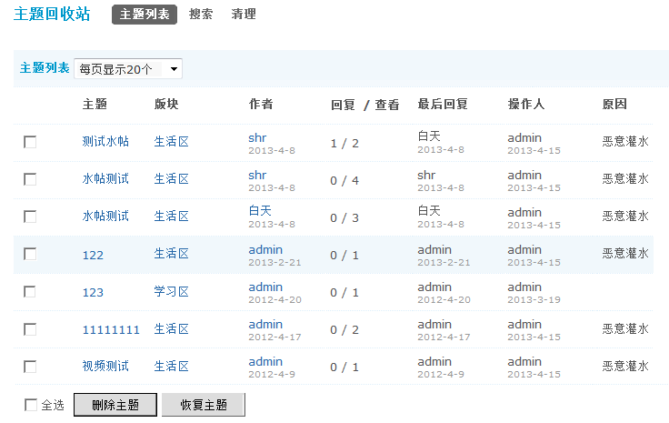
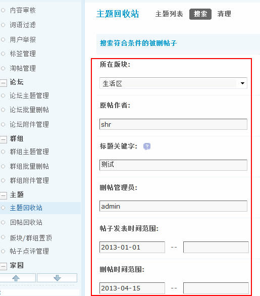
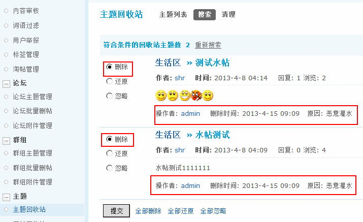
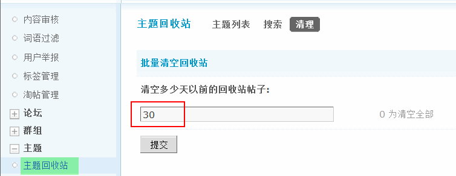

主题回收站
很多站长为版主或者超级版主等管理人员删除帖子而困扰，因为可能版主一时疏忽或者跟帖子作者闹矛盾，而滥用自己的权利，将帖子删除了。作为站长，这是最不想看到的情况，还有一种情况就是管理员误删了站点内某个重要的帖子，那么怎样避免和防止这种情况的发生呢？很显然，版主在其管理的版块里删除帖子是很合情合理的事情，如果删除了帖子，管理员还能将删除的帖子恢复，那样就最好不过了。主题回收站便能实现这个愿望，将前台删除的主题先放到主题回收站里，以便管理员进一步确认是否删除。
需要注意的是这个功能需要在后台开启才可以，首先这个功能是跟每个版块关联的，所以每个版块都有此项设置，即可以控制哪些版块开启主题回收站的功能。
操作路径：【后台】=>【论坛】=>【版块管理】=> 编辑要开启主题回收站的版块 => 帖子选项中，就可以设置这个版块开启或者关闭主题回收站。
小技巧：
如果版块太多，一个一个版块开启太麻烦，还可以到【后台】=>【站长】=>【数据库】=>【升级】=> “常用 SQL 升级语句”里面选取“开启所有版块主题回收站”。
开启之后，在开启了回收站的版块中删除的帖子被删除后就会进入回收站了，不会彻底的删除。可以进入【后台】=>【内容】=>【主题回收站】，来使用此功能。
一、主题列表
打开主题回收站后，默认是按照主题被删除的时间排列的。可以选择对某个或者全部主题进行彻底删除操作，或者恢复操作。
这里可以看到管理主题的详情，如操作者即被谁删除的，以及删除原因、主题作者等信息，管理员可以根据实际情况进行恢复和删除的管理操作。
在这里删除后帖子将被彻底删除，所以删除时要慎重。
二、搜索
主题回收站中，可以根据不同的版块，作者，标题关键字，删帖管理员，帖子发表时间范围等条件进行搜索，并对搜索出来的帖子进行处理。
可以对搜索结果进行单个和批量删除，还原的操作，如果不想操作可以选择忽略。
在这里删除后帖子将被彻底删除，所以删除时要慎重。
三、清理
清理功能可以对回收站中删除时间超过了指定天数的帖子进行清空。避免回收站过大，占用太多数据库空间。
0 为清空全部回收站的帖子。